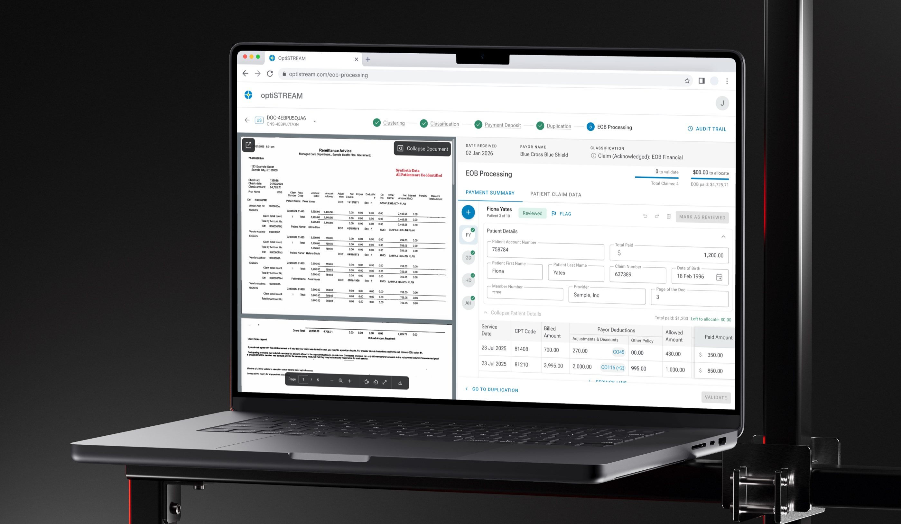
Overview
OptiStream is an AI-powered platform that automates healthcare document processing, helping teams extract, classify, and validate data faster while reducing manual work.
System & Complexity
The system is built as a multi-step workflow where each stage depends on the previous one — making early errors costly and accuracy critical. It combines AI automation with human validation, requiring interfaces that balance speed, clarity, and control. Documents move through a pipeline: clustering, classification, extraction, matching, and final processing.
Key Challenges
The goal: bring this complex type of documents into the platform and reduce manual effort significantly — without sacrificing accuracy.
High-complexity flowEmpty fields, irrelevant data, no way to customise the view. The interface showed everything — whether it mattered or not.
Configurable WorkspaceEvery reviewer started from scratch. No saved context, no shortcuts — just the same repetitive configuration, every time.
Saved FiltersMirroring the document's own structure makes the interface instantly familiar. Reviewers scan faster, context is never lost.
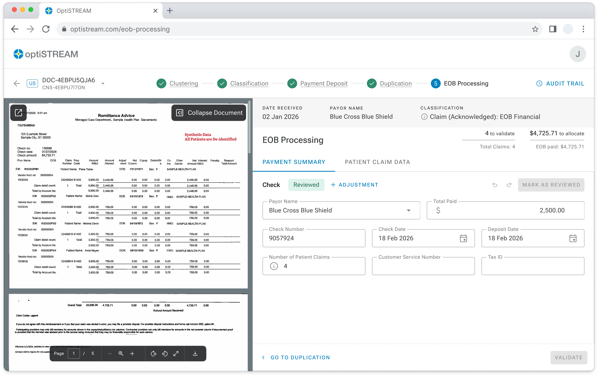
Auto-calculation at every step guides the reviewer toward a correct outcome. The interface won't allow validation until the numbers add up — errors caught before they happen.
The table stays clean. Complexity opens on demand. An elegant entry point into a heavy task.
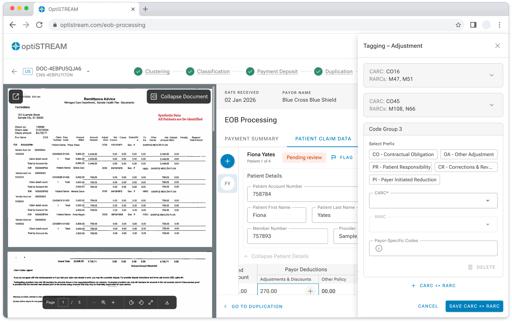
Only the most relevant fields are shown by default — no empty fields, no noise. Reviewers focus on what actually needs validation.
Users configure their work queue once and pin it — every session starts with the right context already applied. Less setup, more work done.
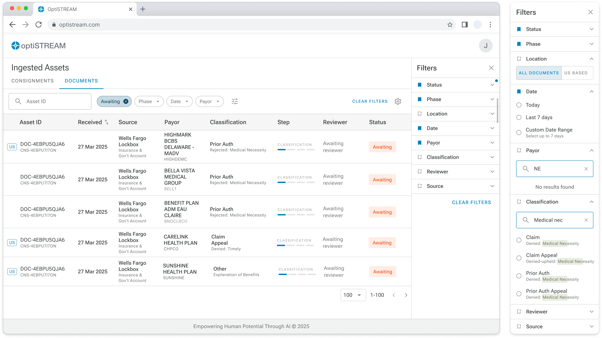
Prototyping & Validation
For complex B2B products, a static prototype isn't enough. I rebuilt the full logic of each flow in Figma Make — automations, calculations, edge cases — so that subject matter experts could test real behaviour, not imagine it. Their feedback drove every iteration.
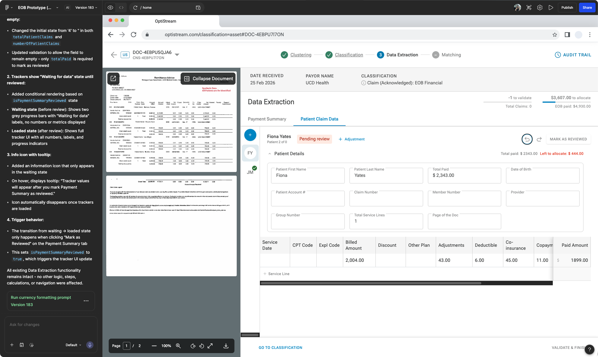
183 versions of the EOB flow alone — not because things went wrong, but because every session with SMEs surfaced new logic to refine.
Explore more screens
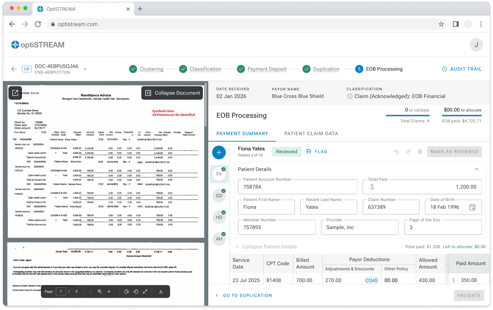
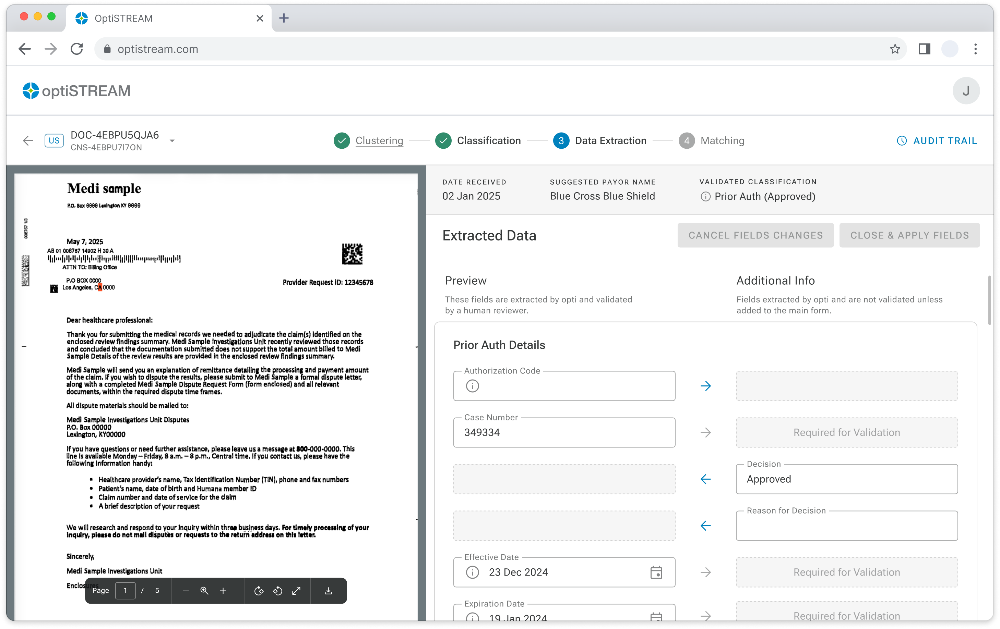
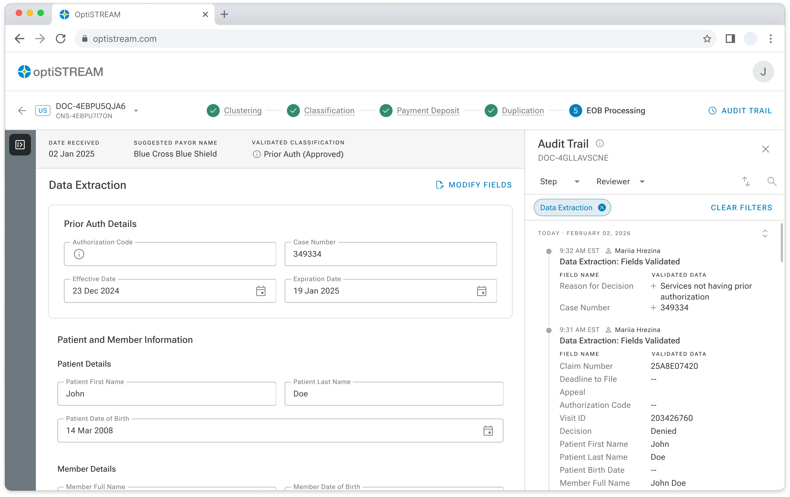
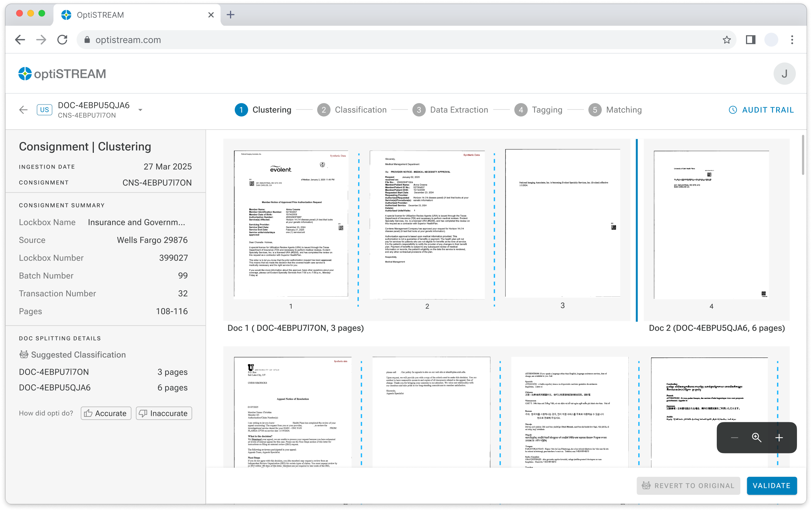
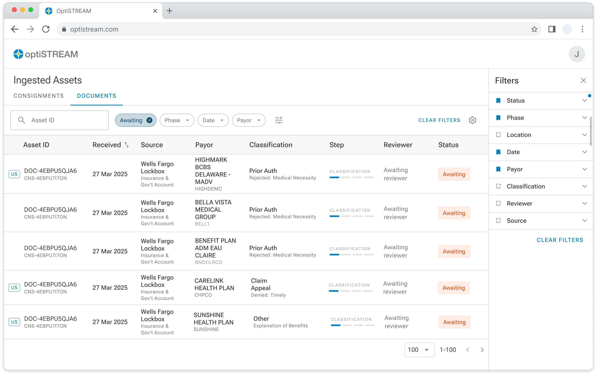
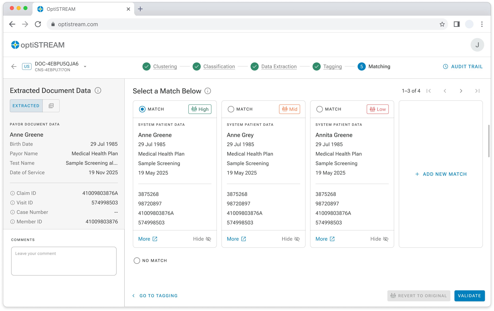
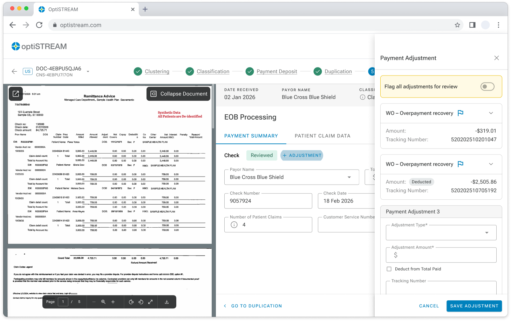
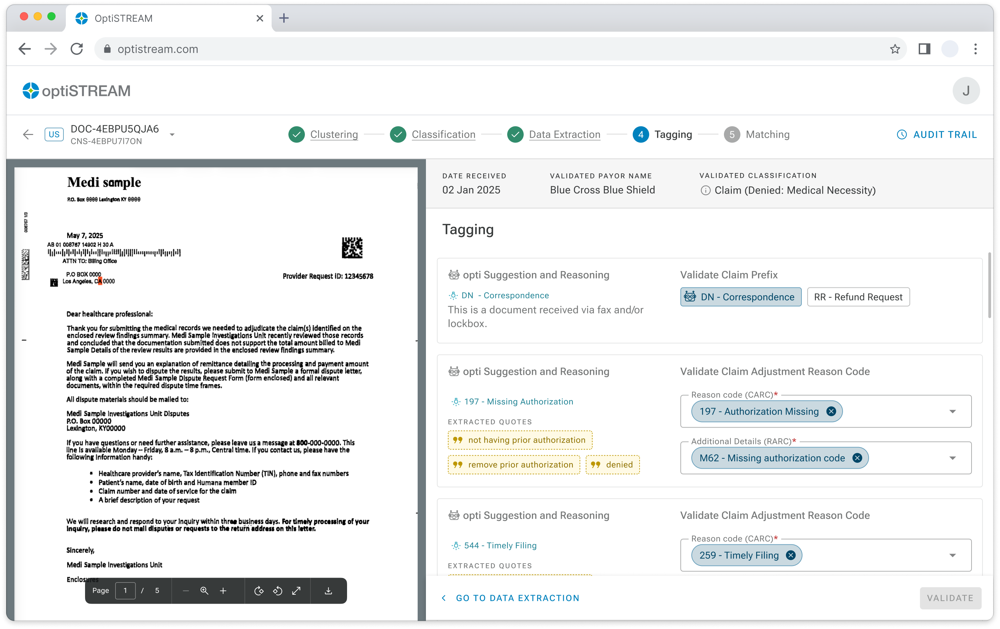
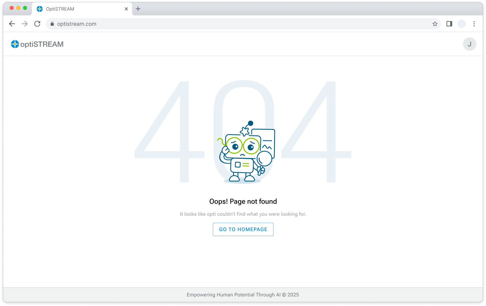
← drag to browse screens →